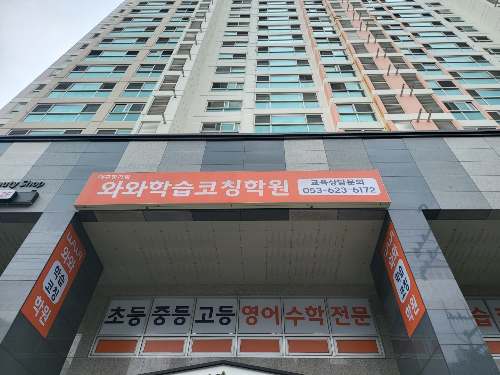
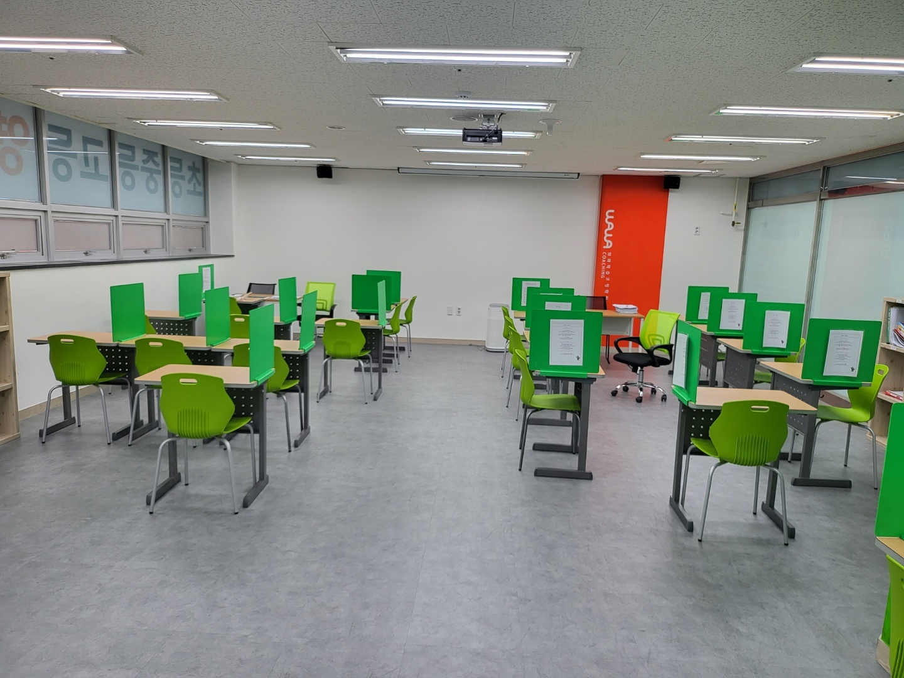
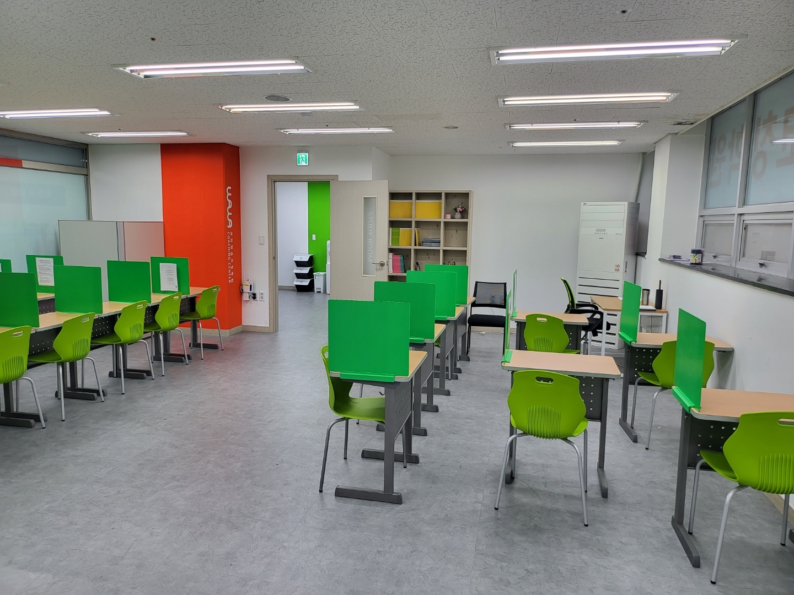
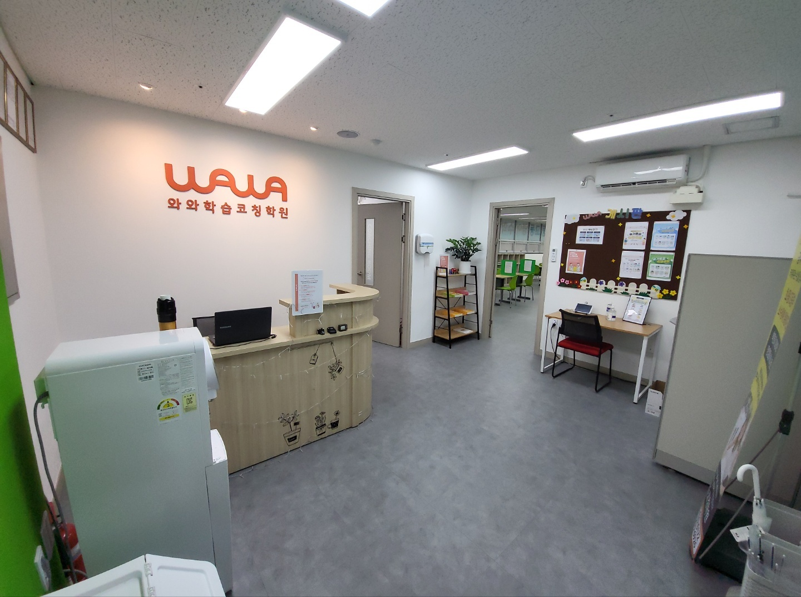

안녕하세요, 대구 달서구 장기동의 와와학습코칭 대구장기점입니다. 장기로를 걷다가 고개를 들면 아파트 상가 2층에 주황색 간판이 보입니다. 그 아래 창문에는 초등·중등·고등 영어·수학 전문이라고 붙어 있습니다. 아파트 단지 바로 아래층이라, 이 동네 아이들은 학원 차를 기다리지 않고 걸어서 옵니다.
학원을 소개할 때 대개 커리큘럼부터 이야기합니다. 그런데 대구장기점을 처음 둘러보신 부모님들이 가장 먼저 물으시는 건 커리큘럼이 아니라 이것입니다. "선생님 자리가 왜 저기 있어요?" 교실 맨 앞 교탁이 아니라, 아이들 책상 사이에 선생님 책상이 하나 끼어 있기 때문입니다.

질문하러 일어나지 않아도 되는 자리
사진 오른쪽을 보시면 초록 가림판이 세워진 아이들 자리 한가운데에 선생님 책상과 의자가 놓여 있습니다. 교실을 내려다보는 자리가 아니라, 아이들과 같은 바닥 높이에서 같은 방향을 보고 앉는 자리입니다. 이렇게 배치한 이유는 하나입니다.
공부하다 막혔을 때, 아이가 손을 들고 교실 앞까지 걸어 나가야 하면 대부분은 그냥 넘깁니다. 특히 초등 고학년과 중1이 그렇습니다. 이 나이대 아이들은 "모르겠어요"라는 말을 다른 친구들이 듣는 것을 몹시 싫어합니다. 그래서 모르는 채로 답지를 보거나, 아예 다음 문제로 넘어갑니다. 채점하면 다 맞은 것처럼 보이는데, 다음 시험에서 똑같은 유형이 또 틀립니다.
선생님이 두 걸음 거리에 앉아 있으면 아이는 일어나지 않고 고개만 돌려 물어볼 수 있습니다. 질문의 문턱이 낮아지면 질문 횟수가 늘고, 질문이 늘면 아이가 정확히 어디서 막히는지가 선생님 손에 잡힙니다. 대구장기점이 "우리 아이는 질문을 잘 안 해요"라는 말씀에 대해 내놓은 답이 이 자리 배치입니다.
물론 반대 방향도 작동합니다. 선생님이 옆에 있으니 딴짓이 오래가지 않습니다. 감시하려고 앉은 자리는 아니지만, 결과적으로 아이는 앉은 지 10분 만에 흐트러지지 않습니다.

STUDY ROOM에 굳이 문을 단 이유
안쪽에 STUDY ROOM 문패가 달린 방이 따로 있습니다. 넓은 공간을 한 덩어리로 쓰면 자리를 더 놓을 수 있는데, 굳이 벽을 세우고 문을 달았습니다.
같은 시간에 아이들이 하는 일이 다르기 때문입니다. 어떤 아이는 선생님과 소리 내어 개념을 설명하고 되묻는 중이고, 다른 아이는 시험 시간처럼 조용히 문제를 풀어야 합니다. 이 둘을 한 공간에 두면 둘 다 반쪽이 됩니다. 설명하는 쪽은 목소리를 낮추게 되고, 푸는 쪽은 자꾸 귀가 열립니다.
그래서 대구장기점은 말이 오가는 공간과 혼자 버티는 공간을 문으로 나눠 두었습니다. 아이들은 그날 할 일에 따라 자리를 옮깁니다. 문 하나가 "지금 나는 무엇을 하는 시간인가"를 알려 주는 셈입니다. 문 옆 책장에는 학년별 교재가 정리돼 있어, 필요한 책을 가지러 다시 나갈 일이 없습니다.
장동초·장기초 아이들이 결국 원화중 한 곳에서 만납니다
대구장기점 주변에는 초등학교가 많습니다. 장동초·장기초·성당초·본리초·덕인초. 그런데 이 아이들이 진학하는 중학교는 원화중으로 모입니다. 여러 갈래에서 출발해 한 곳에서 만나는 구조입니다.
이게 왜 중요하냐면, 중1 첫 시험에서 순위가 한 번에 드러나기 때문입니다. 초등학교 때는 반에서 몇 등인지 정확히 알기 어렵습니다. 학교마다 시험 방식도 다릅니다. 그러다 중학교에 들어가 여러 초등학교 아이들이 한 교실에 섞이고, 처음으로 같은 문제, 같은 기준으로 성적이 나옵니다. 이때 "우리 애가 이 정도였나" 하고 놀라시는 부모님이 매년 계십니다.
대구장기점이 초등 5·6학년에 특히 신경 쓰는 이유가 여기 있습니다. 이 시기에 잡아야 할 것은 선행 진도가 아니라 세 가지입니다.
- 혼자 앉아 있는 시간 — 초등 때 40분을 못 버틴 아이가 중학교에서 갑자기 버티지 못합니다. 시간을 조금씩 늘려 몸에 익힙니다.
- 모르면 묻는 습관 — 앞에서 말씀드린 자리 배치가 이 습관을 만듭니다. 중학교 가서 갑자기 생기는 습관이 아닙니다.
- 연산과 문장제의 분리 — 초등 수학에서 틀리는 이유가 계산 실수인지 문제를 못 읽은 것인지 구분해 둡니다. 중학교 수학이 어려워지는 지점은 대부분 후자입니다.
중학교에 올라간 뒤에는 영어와 수학의 관리 방식이 갈립니다. 수학은 단원이 끝날 때마다 이해 여부를 확인하고 넘어가고, 영어는 어휘와 어법을 시험 기간에만 몰아치지 않도록 평소에 나눠 쌓습니다.

들어서면 바로 보이는 데스크, 그 옆의 게시판
문을 열면 와와학습코칭학원 로고가 붙은 벽과 상담 데스크가 정면에 있습니다. 데스크가 입구를 마주 보고 있어서, 아이가 언제 왔고 언제 나가는지가 자연스럽게 확인됩니다. 별도의 출결 절차를 요란하게 두지 않아도 되는 구조입니다.
오른쪽 벽에는 게시판이 있습니다. 부모님이 상담을 기다리시는 동안 읽으실 수 있는 자리입니다. 대구장기점 상담에서 지키는 순서가 하나 있습니다. 성적표를 먼저 펼치지 않는 것입니다. 먼저 여쭙는 것은 이런 것들입니다. 집에서는 몇 시에 책상에 앉는지, 숙제를 할 때 옆에 휴대폰이 있는지, 모르는 문제를 만나면 몇 분쯤 붙들고 있는지.
점수는 결과이고, 이 답들이 원인이기 때문입니다. 원인을 모른 채 문제집만 바꾸면 3개월 뒤에 같은 자리로 돌아옵니다.
대구장기점 찾아오시는 길
와와학습코칭 대구장기점은 대구광역시 달서구 장기로 252, 장기협성휴포레 2층 209·210호에 있습니다. 아파트 단지 상가 건물이라 아이 혼자 오갈 수 있고, 상가 복도로 들어오면 유리문에 와와 로고가 붙어 있습니다.
학습 진단과 상담은 무료입니다. 아이와 함께 오셔도 되고, 부모님만 먼저 오셔서 이야기를 나누셔도 됩니다. 초등 고학년부터 중·고등까지 영어·수학을 중심으로 관리합니다.
혹시 아이가 "학원에서 모르는 게 있어도 그냥 넘어간다"고 말한 적이 있다면, 한 번 오셔서 교실 자리 배치부터 보고 가셔도 좋겠습니다.